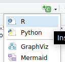

R Markdown
Learning objectives
- Learn how to generate an html/pdf report using Rmarkdown and Rstudio
What is R Markdown?
R Markdown provides a means of combining executable R code, code output and textual content in a single document. This documents can then be used to create report in a variety of different formats, such as PDF, HTML or even Word. R Markdown can be used to create static reports or slides.
The session will provide a brief introduction to R Markdown, including how to create a new R Markdown document, how to add text and images, how to insert R code chunks, and how to render the document to create a report.
More detailed materials can be found here.
Packages for this session
We will be using the following packages in this session. If you don’t
have them installed, you can do so using the
install.packages() function.
library(tidyverse)
library(knitr)
library(kableExtra)
library(DT)
library(patchwork)knitr is the package that is used to convert R Markdown
documents to various output formats. It is also used to control how the
output of R code is rendered in the document, and its kable
function is used to create tables in R Markdown documents. Note that you
don’t need to load the knitr package explicitly, as it is
loaded automatically when you create an R Markdown, but if you want to
use the kable function you may wish in order not to have to
type knitr::kable() every time.
The kableExtra package extends the functionality of
knitr, providing additional functions for formatting
tables. The DT package provides a way to create interactive
tables in R Markdown documents. The patchwork package
provides a way to combine multiple ggplots into a single figure.
Creating an R Markdown document
We can start a new R Markdown document in RStudio from the menu bar:
File –> New File –>
R Markdown...

This will bring up the following diaglogue box:

Change the title to something meaningful, add your name as the author
if you wish, select the type of document you want the markdown to
generate (this can be changed later) and then click OK to
create a starter script.
Save the starter script as MyFirstRmarkdown.Rmd.
The basic components of an R Markdown
An R Markdown file is made up of 3 components:
- Header - metadata and instructions related to rendering the document
- Markdown sections - Text, images, links, tables, lists to be included in the report
- R code chunks - Code chunks to be executed and the output included in the report

You may have noticed that opening an R Markdown (.Rmd)
document caused a few new icons to appear on the toolbar above the
script window. For now just click:

This will convert (or render) the document to html format.
In this session we will generate an HTML file, however, it is possible to generate a range of different document types, and these are extensible to link multiple documents into “books” or websites. We’ll keep it simple for this introduction. Let’s look at each section in a little more detail.
Header
The R markdown document starts with a header in YAML format.
The header begins and ends with a line with three hyphens
(---). The only required field is the output
field, which defines what type of document is to be created. Other
fields either define metadata, e.g. author or
title, or they contain information related to the rendering
of the output document, e.g. whether to include a table of contents or
not (we’ll look at this later).
In the example below the title, author,
output and date have been specified
---
title: "My First Markdown"
author: "Ashley Sawle"
output: html_document
date: "2025-04-23"
---Markdown sections
Markdown is a markup language that allows you to add formatting to text, such as bold or italics. Unlike in a word processor such as MS Word, the effect of formatting is not visible in a markdown (.md) document, only once the document is rendered to create the output. Markdown uses specific syntax to add formats to the text. The benefit of this is Markdown is lightweight and platform independent.
R Markdown combines normal Markdown for text and images with separate chunks thank can contain executable R code, the outputs of which can be included in the document.
The full documentation of the Markdown syntax can be found here. Here we will concentrate on the most commonly used elements.
Inline text formatting
Seeing as we have already mentioned bold and italics, let’s see how they work. To apply inline formatting for text, we simply surround the text we want to format with a particular set of symbols. For example to render some text in italics we surround the text with either asterisks or underscores:
This is *italics* or This is _italics_ →
This is italics
Other possible inline formatting syntax includes:
Double asterisks/underscores for bold:
This **is bold**orThis __is bold__→ This is boldTilde (
~) for subscript:This is ~subscript~→ This is subscriptCaret (
^) for superscript:This is ^superscript^→ This is superscriptDouble tilde (
~) for strikethrough:~~This is strikethrough~~→This is strikethroughBackticks (
`) for “code” font:This is `code`→ This iscode
Note that any amount of text can come between the two sets of syntax.
Headings
Section headings are created using the # symbol
(technically called an octothorp!) at the beginning of the line. The top
level is the document title and uses one #:
# Title
However, we have specified this in the yaml header so would not use it in the body of the document. Using 2 creates a section header:
## Section → Section
Increasing the number of # symbols creates deeper and
deeper levels of sub-sections.
# Title
## Section
### Sub-section
#### Sub-sub section
##### Sub-sub-sub section
###### Sub-sub-sub-sub sectionAdding a table of contents
The section headers can be automatically added to a table of contents. As this is “instructions related to rendering the document”, we need to add this information to the head yaml:
output:
html_document:
toc: trueBy default all headings up to level 3 headings are displayed in the
table of contents. You can adjust this by specifying
toc_depth. Also, the table of contents will default to a
“static” list under after title matter of the document. With html format
we could instead have a “floating” (and collapsible) table of contents
that stays on view on the left of the document body as the document is
scrolled. To implement these we add two additional lines to the
yaml:
output:
html_document:
toc: true
toc_depth: 4
toc_float: trueTab sets
A neat thing to do with headers and sub-headers is to create tab sets. If we add the syntax {.tabset} after a header, all subsequent sub-headers on the next level down will be rendered as tabs, rather than just consecutive text. For example:
#### Some different formattings {.tabset}
The following tabs show different inline formatting syntax.
##### Bold
Bold is achieved with double asterisks e.g. `**bold**` is rendered as **bold**.
##### Italics
Italics is achieved with a single asterisk e.g. `*italics*` is rendered as *italics*.
##### Strikethrough {.unlisted .unnumbered}
Strikethrough is achieved with tilde e.g. `~strikethrough~` is rendered as
~Strikethrough~.
#### Next section
The tab set ends when we return to a higher header level.is rendered as:
Some different formattings
The following tabs show different inline formatting syntax.
Bold
Bold is achieved with double asterisks e.g. **bold** is
rendered as bold.
Italics
Italics is achieved with a single asterisk
e.g. *italics* is rendered as italics.
Strikethrough
Strikethrough is achieved with tilde
e.g. ~strikethrough~ is rendered as
Strikethrough.
Next section
The tab set ends when we return to a higher header level.
NOTE: The border and background colour have been added in order to differentiate the output rendered from the markdown above from the main text of this document. This is not part of the default output.
Line breaks
Two consecutive lines of body text in the R Markdown document will be read as as the same paragraph and concatenated. To insert a line break between two lines either add two (or more) spaces or a backslash at the end of the first line. For example:
This is the first line
There are no spaces after the end of the previous lineis rendered as:
This is the first line There are no spaces after the end of the previous line
where as:
This is the first line\
There are no spaces after the end of the previous lineis rendered as:
This is the first line
There are no spaces after the end of the previous line
Lists
We can create both unordered lists (bullet points) or ordered lists (numbered).
Unordered lists
To create an unordered list using *, - or
+ (all do the same thing). You can created nested lists by
indenting by 4 spaces.
* Cricket
* Rugby
* Football
* English Premier League
* La Liga
* Serie A
* Basketball
* Volleyball
* Hockeyis rendered as:
- Cricket
- Rugby
- Football
- English Premier League
- La Liga
- Serie A
- Basketball
- Volleyball
- Hockey
Ordered lists
Ordered lists can be created using a number for numeric bullets, a
lower case letter for a, b,
c…etc., or is for roman numerals. Again
indentation can be used to create nested lists. For example
1. Cat
2. Ferret
3. Dog
a. Terriers
i. Jack Russell
ii. Airedale
iii. Yorkshire
iv. West Highland
b. Labradors
c. Spaniels
4. Goldfishis rendered as:
- Cat
- Ferret
- Dog
- Terriers
- Jack Russell
- Airedale
- Yorkshire
- West Highland
- Labradors
- Spaniels
- Terriers
- Goldfish
It isn’t actually necessary to use particular numbers/letters/roman numerals in any particular order - the correct order for the bullets will be determined when the document is rendered. So in fact the following would results in the same output:
1. Cat
1. Ferret
5. Dog
a. Terriers
i. Jack Russell
i. Airedale
i. Yorkshire
i. West Highland
b. Labradors
a. Spaniels
1. GoldfishLinks
As with a standard html web page, we can add hyperlinks, both to internal sections of the document or to external pages. The general format for creating a link is to surround the link text (what is displayed) with square brackets and then follow this with the link itself (internal tag or external page) surrounded by round backets:
[This is the text](this_is_the_link)External links
External links can either be to another html document on the same file system or to a URL elsewhere on the internet.
For example we can link to week 6 documentation, which is in the same folder as this document:
[week 6 document](week6.html) → week 6 document
Alternatively, we can link to pages elsewhere on the internet, e.g:
[Hadley Wickham's old R Markdown page](https://r4ds.had.co.nz/r-markdown.html)
→ Hadley Wickham’s old
R Markdown page
Internal links to sections
We can link to any section of the current document, but first we need to add a tag to the header for that section. For example, if we want to be able to link to the top of this Markdown section, we would add a tag to the header like this:
## Markdown sections {#markdown-header}
Then to link to this section in text we would use:
[link to header](#markdown-header)
e.g. Follow this link to get to the top of this section
Inserting images
Images can be inserted into the document in a number of ways, but the simplest uses a similar syntax to links, but this time preceded by an exclamation mark:

The link can be a URL to an image elsewhere on the internet or a relative path to an image on the same file system.

inserts the image like this:

This does not give us much control over how the image is rendered. We can control the size by specifying the width in either absolute display pixels or the percentage of the document width with the following syntax:
{width=10%}
inserts the image like this:
{width=150px}
inserts the image like this:
Tables
Most tables to appear in your documents will be data generated by R code chunks, however, on rare occasions we may want to manually include a table. This can be achieved using the following syntax.
| Name | Band |
| ----------- | ----------- |
| Mick | Stones |
| John | Beatles |
| Paul | Beatles | is rendered as:
| Name | Band |
|---|---|
| Mick | Stones |
| John | Beatles |
| Paul | Beatles |
Table alignments can be done using the following syntax:
| Name | Band | Instrument |
| :--- | :----: | ---: |
| John | Beatles | Guitar |
| Paul | Beatles | Bass |
| Keith | Stones | Guitar |This is rendered as:
| Name | Band | Instrument |
|---|---|---|
| John | Beatles | Guitar |
| Paul | Beatles | Bass |
| Keith | Stones | Guitar |
Blockquotes
A block quote is often used when we want to quote a piece of text
from another document. This is done by using the >
symbol at the beginning of the line. For example:
> "The R language is a free software environment for statistical
> computing and graphics supported by the R Foundation for Statistical
> Computing. The R language is widely used among statisticians and
> data miners for developing statistical software and data analysis."
> (Wikipedia)is rendered as:
“The R language is a free software environment for statistical computing and graphics supported by the R Foundation for Statistical Computing. The R language is widely used among statisticians and data miners for developing statistical software and data analysis.” (Wikipedia)
Code blocks
We have seen that we can highlight text as “code” inline using
backticks `code`. This is useful for short snippets of
code, but if we want to add a longer piece of code as part of the
documentation (i.e. not code that we want to run, but just to show the
reader), we can use a code block. This is done by surrounding the code
with three backticks. For example:
```
metabric %>%
group_by(ER_status, Cancer_type) %>%
summarise(ERBB2_mean = mean(ERBB2)) %>%
top_n(n = 1)
```This will be rendered as:
metabric %>%
group_by(ER_status, Cancer_type) %>%
summarise(ERBB2_mean = mean(ERBB2)) %>%
top_n(n = 1)For code that we actually want to run, we will use R code chunks.
R code chunks
R code that we want to run during the rendering of document should be placed in an R code chunk. These sections of R code are executed when the document is rendered. The results of the code may then be included in the output document. This allows us to dynamically generate tables, figures and other output based on the data and code in the document. This is a powerful feature of R Markdown, as it allows us to create reproducible reports that can be easily updated with new data or code changes.
The R code chunk is created by surrounding the code with three
backticks and adding {r} after the first three backticks.
For example:
```{r}
x <- 10
y <- 20
x + y
```Generates the following in the output:
x <- 10
y <- 20
x + y## [1] 30By default the code is written to a code chunk (we can change this -
see below). and any output from the code is
written underneath. The output might include anything that would
normally be written to the console (such the result of
x + y here), tables, plots, or even warnings or errors.
Creating code chunks
To create a code chunk, you can use the insert icon on the toolbar:

or you can use the keyboard shortcut Ctrl + Alt + I
(Windows) or Cmd + Option + I (Mac), or you can type the
code chunk manually as shown above. The code chunk will be created at
the location of the cursor in the document.
The empty code chunk will look like this:

You’ll notice a few icons on the right in the toolbar above the code chunk. These are used to run the code chunk, run all code chunks above the current chunk, and to manage chunk options (see below).
Running code chunks
To run a code chunk, you can click the green arrow icon in the
toolbar above the code chunk, or you can use the keyboard shortcut
Ctrl + Shift + Enter (Windows) or
Cmd + Shift + Enter (Mac). This will run the code in the
chunk and display the output below the chunk.
Chunk options
We can apply a number of options to code chunks to control how they are rendered in the output document. There are a large number of possible options the most common of which are:
echo = FALSE- do not display the code in rendered document, but do display the results of the code.include = FALSE- do not display either the code or the results in the document when it is rendered. The code will still run and so any changes it makes to the environment (new objects or changes to existing objects) will be available for subsequent code chunks.message = FALSE- do not display any messages that are generated by the code chunk in the rendered file.warning = FALSE- do not display warnings that are generated by code chunk in the rendered file.eval = FALSE- do not run the code in the chunk, but display the code in the rendered document.cache = TRUE- cache the results of the code chunk so that it does not need to be re-run every time the document is rendered. This can speed up rendering time for large code chunks or when the code takes a long time to run. The cache is stored in a folder calledcachein the same directory as the R Markdown file.fig.widthandfig.height- set the width and height of figures generated by the code chunk.fig.cap- set the caption for the figure generated by the code chunk. This will be displayed below the figure in the rendered document.
A thorough guide to all the avaialable chunk options (and more
knitr options) can be found here.
Chunk label
We can specify a label for the code chunk by adding it after the
{r} in the code chunk header:
```{r label}
```This has a number of uses. In RStudio you should see a menu in the bottom left of the script panel:

This gives us a way to navigate through the document and includes any headers and code chunks with labels. This is very useful for long documents.
The “setup” chunk
Best practice is to create a “setup” chunk at the beginning of the document. This chunk should include all the packages that you will need to run the the code in the document.
The “setup” chunk will also include any options that you want to set
for the entire document. For example, you might want to set the default
chunk options for the entire document to not display code. You can do
this using the knitr command opts_chunk$set().
For example the set up chunk might look like this:
```{r setup, message=FALSE}
library(tidyverse)
library(patchwork)
library(knitr)
library(kableExtra)
library(DT)
knitr::opts_chunk$set(warning = FALSE, echo = TRUE)
```The opts_chunk$set() function sets the default options
for all chunks, in this case to always display the code and not display
any warnings. You can override these options in individual chunks by
specifying the options in the chunk header.
It’s good idea to set message = FALSE for the setup
chunk so that it does not print all the package startup messages in the
rendered document.
A note on the working directory
When evaluating code chunks, the default working directory is the location of the R Markdown file. This means that any paths to files you wish to read/write need to be relative to that directory. If you wish to use a different working directory, you can set this in the setup chunk using the following code:
projDir <- "/Full/path/to/your/project/directory"
opts_knit$set(root.dir = projDir)Tabular output
By default, R Markdown will display tables in basically the same way
as they would be displayed in the console. For example, if we display
the first few rows of the mtcars dataset we get the
following:
smallTable <- mtcars %>%
rownames_to_column("car") %>%
select(car, mpg, cyl, wt) %>%
slice(1:5)
smallTable## car mpg cyl wt
## 1 Mazda RX4 21.0 6 2.620
## 2 Mazda RX4 Wag 21.0 6 2.875
## 3 Datsun 710 22.8 4 2.320
## 4 Hornet 4 Drive 21.4 6 3.215
## 5 Hornet Sportabout 18.7 8 3.440Basically imformative, but not very pretty. There are a lot of things
we can do to make the table a more functional and look better in our
report. The simplest is to use the kable() function from
the knitr package.
The kable() function
smallTable %>%
kable()| car | mpg | cyl | wt |
|---|---|---|---|
| Mazda RX4 | 21.0 | 6 | 2.620 |
| Mazda RX4 Wag | 21.0 | 6 | 2.875 |
| Datsun 710 | 22.8 | 4 | 2.320 |
| Hornet 4 Drive | 21.4 | 6 | 3.215 |
| Hornet Sportabout | 18.7 | 8 | 3.440 |
kable generates a simple table using the Markdown syntax
that we saw previously. It can be used to control some basic aspects of
the appearance of the table, including the number of digits displayed,
the alignment of the columns, and the formatting of the table. For
example, we can use the digits argument to specify the
number of digits to display for each column. We can also use the
align argument to specify the alignment of the columns.
smallTable %>%
kable(digits = 2, align = "c")| car | mpg | cyl | wt |
|---|---|---|---|
| Mazda RX4 | 21.0 | 6 | 2.62 |
| Mazda RX4 Wag | 21.0 | 6 | 2.88 |
| Datsun 710 | 22.8 | 4 | 2.32 |
| Hornet 4 Drive | 21.4 | 6 | 3.21 |
| Hornet Sportabout | 18.7 | 8 | 3.44 |
A comprehensive guide to the kable function can be found
here.
There are a large number of other packages available to format tables in more sophisticated ways. There is a list of some of the most popular packages here.
Here we will look at two packages: kableExtra, which
extends the formatting capabilities of kable, and
DT, which provides a more interactive table format.
The kableExtra package
The package kableExtra replaces kable()
with the function kbl() to display tables in R Markdown. We
can then use various formatting commands to control the appearance of
the table in much the same way as we add layers to a ggplot. The
kableExtra package provides a number of functions that can
be used to format tables, including kable_styling(),
column_spec(), and row_spec().
smallTable %>%
kbl() %>%
kable_styling(bootstrap_options = c("striped", "hover")) %>%
column_spec(column = 1, bold = TRUE, border_right = TRUE)| car | mpg | cyl | wt |
|---|---|---|---|
| Mazda RX4 | 21.0 | 6 | 2.620 |
| Mazda RX4 Wag | 21.0 | 6 | 2.875 |
| Datsun 710 | 22.8 | 4 | 2.320 |
| Hornet 4 Drive | 21.4 | 6 | 3.215 |
| Hornet Sportabout | 18.7 | 8 | 3.440 |
As well as allowing us to control the formatting of the table
ourselves, kableExtra also provides a number of pre-defined
styles that we can use to quickly format our tables.
smallTable %>%
kbl() %>%
kable_classic(full_width = F, html_font = "Cambria")| car | mpg | cyl | wt |
|---|---|---|---|
| Mazda RX4 | 21.0 | 6 | 2.620 |
| Mazda RX4 Wag | 21.0 | 6 | 2.875 |
| Datsun 710 | 22.8 | 4 | 2.320 |
| Hornet 4 Drive | 21.4 | 6 | 3.215 |
| Hornet Sportabout | 18.7 | 8 | 3.440 |
More details about all the fancy things you can do with
kableExtra can be found here.
The DT package
The DT package provides a more interactive table format
that allows us to sort, filter, search, and paginate the table. It also
provides options to add buttons to export the table to CSV, Excel, or
PDF format. The basic command is datatable(), which takes a
data.frame as input and returns an interactive table.
longTable <- mtcars %>%
rownames_to_column("car") %>%
select(car, mpg, cyl, wt)
longTable %>%
datatable()There are a lot of options available to control the appearance and functionality of the table. Extensive documentation is available here.
Much of the formatting is done using the options
argument, which takes a list of options. The dom option
controls the layout of the different elements, and the
buttons option controls the buttons that are displayed. The
pageLength option controls the number of rows displayed on
each page.
The dom option is a string that specifies the layout of
the table. The string can contain the following characters:
l- length changing input control (how many rows to display)f- filtering input (search box)t- tablei- table information summary (e.g. “Showing 1 to 10 of 57 entries”)p- pagination control (next/previous buttons)B- buttons (export buttons)r- processing display element (loading indicator)
The order of the characters in the string determines the order in which the elements are displayed.
Let’s add custom column names to the table, remove the search box, change the number of rows displayed on each page, and add a button to export the table to CSV.
By ommitting the f character from the dom
string, we remove the search box.
To add the export buttons, we need to add the buttons
option to the options argument, but we also need to add the
B character to the dom string and intruct the
table to use the “Buttons” extension.
longTable %>%
datatable(
extensions = "Buttons",
options = list(
dom = "Btip",
buttons = c("csv", "excel"),
pageLength = 5),
colnames = c("Car", "Miles per gallon", "Cylinders", "Weight")
)The DT R packages is a wrapper for the JavaScript
library DataTables. Be careful
when searching the web for information about DT that you
are not looking at the JavaScript documentation. Also, be carefule not
to confuse the DT package with the data.table
package, which is a different package for fast data manipulation in
R.
NOTE: Be wary of creating very large tables in R Markdown documents. The data in the table is all embedded in the final document when it is rendered. If you have a very large table resulting document can be very large.
Plots
If a code chunk generates a plot, the plot will be displayed in the output document.
```{r plot}
mtcars %>%
ggplot(aes(x = mpg, y = wt)) +
geom_point() +
labs(title = "Scatter plot of weight vs miles per gallon",
x = "Miles per gallon",
y = "Weight") +
theme_minimal()
```is rendered as:
mtcars %>%
ggplot(aes(x = mpg, y = wt)) +
geom_point() +
labs(title = "Scatter plot of weight vs miles per gallon",
x = "Miles per gallon",
y = "Weight") +
theme_minimal()Using chunk options we can control the size of the plot in the document and add a caption to the plot.
The default size of the plot is 7 inches wide and 5 inches high. We
can change the size of the plot using the fig.width and
fig.height options.
Note that the caption can be specified as a string in the
fig.cap option or using a variable that can be defined in
the code chunk (or in a previous code chunk).
```{r plot2, fig.with=5, fig.height=3, fig.cap=figCap}
figCap <- "Scatter plot of weight vs miles per gallon"
mtcars %>%
ggplot(aes(x = mpg, y = wt)) +
geom_point() +
labs(x = "Miles per gallon",
y = "Weight") +
theme_minimal()
```is rendered as:
figCap <- "Scatter plot of weight vs miles per gallon"
mtcars %>%
ggplot(aes(x = mpg, y = wt)) +
geom_point() +
labs(x = "Miles per gallon",
y = "Weight") +
theme_minimal()Scatter plot of weight vs miles per gallon
The patchwork package
It is often the case that we want to put multiple plots together in a
single figure. There are various packages that can be used to do this
such as ggarrange, gridExtra, and
cowplot. Here we will look at the patchwork
package, which provides a very simple and intuitive way to combine
ggplots in a grid.
First create each plot and rather than printing them, assign them to
a variable. Then we can use the patchwork syntax to combine
the plots.
p1 <- mtcars %>%
mutate(across(cyl, factor)) %>%
ggplot(aes(x = mpg, y = wt)) +
geom_point(aes(colour = cyl)) +
geom_text(label = "A", x = 22.5, y = 3.5, size = 50)
p2 <- mtcars %>%
mutate(across(cyl, factor)) %>%
ggplot(aes(x = gear, y = hp)) +
geom_point(aes(colour = cyl)) +
geom_text(label = "B", x = 4, y = 195, size = 50)
p1 + p2 patchwork provides a lot of options for combining plots,
including + to add plots together, / to stack
plots vertically, and | to stack plots horizontally. We can
use plot_layout() to control various aspects of the layout,
for example we can combine legends when they are the same. We can also
use plot_annotation() to add a title and subtitle to the
figure (and other annotations).
I am going to reuse the same plots a few times just to show you how the layout works.
((p1 + p2) / (p2 + p1 + p2) | (p1 / p2 / p1)) +
plot_layout(guides = "collect") +
plot_annotation(title = "Patchwork example",
subtitle = "Combining plots with patchwork")Here I have gathered plots into three plot groups -
p1 + p2, p2 + p1 + p1, and
p1 / p2 / p1. In the final group I have used the
/ operator to stack the plots vertically. I have then
stacked the first two groups above each other and the third group to the
right using the | operator.
The plot_layout() and plot_annotation() can
be added to any grouping level so to get them to apply to the whole
figure, we put all three groups in brackets to define the whole figure.
It can take a bit of getting used to, but once you get the hang of it,
it is very simple to create complex figures with many plots.
Extensive documentation is available here.
Inline R code
It is also possible to include R code inline in the markdown. This is
done by surrounding the code with single backticks and start it wil
r. This is useful if, for example, you want to include a
value from a variable in the text. For example:
```{r inline}
six_cyl_mean_mpg <- mtcars %>%
filter(cyl == 6) %>%
summarise(mpg = mean(mpg)) %>%
pull(mpg)
```
The mean mpg of cars with 6 cylinders was **`r six_cyl_mean_mpg`**.Will be rendered as:
six_cyl_mean_mpg <- mtcars %>%
filter(cyl == 6) %>%
summarise(mpg = mean(mpg)) %>%
pull(mpg)The mean mpg of cars with 6 cylinders was 19.7428571.
Challenge
Based on the information in this document and in the various links, create a report to match the one here.
I have hidden the code except for the chunk loading the data and the last chunk, which prints the session info. Where the code chunks should be you’ll see:
Code chunk: *some details*Replace these as necesary with your own code - you may want to refer back to previous sessions.
You may also need to do a bit of searching in function help pages,
documentation linked above or on the web generally to figure out some of
the code. For example, in the final figure I have added sub-figure
labels (a, b, c, d) using patchwork. I couldn’t remember
how to do this, so I did a web search for “patchwork figure labels”.
Don’t worry about the grey banner at the top, that is part of this website.
Acknowledgements
This session was developed with reference to materials by Alexia Cardona and the Data Carpentry project.
Session details
It is good practice to include details of the R environment used in
the analysis, including the R version, packages used and their version
numbers. This can be done at the end of the report. The neatest way to
do this is to use the devtools package.
devtools::session_info()## ─ Session info ───────────────────────────────────────────────────────────────
## setting value
## version R version 4.5.0 (2025-04-11)
## os Ubuntu 24.04.2 LTS
## system x86_64, linux-gnu
## ui X11
## language (EN)
## collate en_US.UTF-8
## ctype en_US.UTF-8
## tz Europe/London
## date 2025-04-25
## pandoc 3.1.3 @ /usr/bin/ (via rmarkdown)
## quarto NA
##
## ─ Packages ───────────────────────────────────────────────────────────────────
## package * version date (UTC) lib source
## bslib 0.9.0 2025-01-30 [1] CRAN (R 4.5.0)
## cachem 1.1.0 2024-05-16 [1] CRAN (R 4.5.0)
## cli 3.6.4 2025-02-13 [1] CRAN (R 4.5.0)
## colorspace 2.1-1 2024-07-26 [1] CRAN (R 4.5.0)
## crosstalk 1.2.1 2023-11-23 [1] CRAN (R 4.5.0)
## devtools 2.4.5 2022-10-11 [1] CRAN (R 4.5.0)
## digest 0.6.37 2024-08-19 [1] CRAN (R 4.5.0)
## dplyr * 1.1.4 2023-11-17 [1] CRAN (R 4.5.0)
## DT * 0.33 2024-04-04 [1] CRAN (R 4.5.0)
## ellipsis 0.3.2 2021-04-29 [1] CRAN (R 4.5.0)
## evaluate 1.0.3 2025-01-10 [1] CRAN (R 4.5.0)
## farver 2.1.2 2024-05-13 [1] CRAN (R 4.5.0)
## fastmap 1.2.0 2024-05-15 [1] CRAN (R 4.5.0)
## forcats * 1.0.0 2023-01-29 [1] CRAN (R 4.5.0)
## fs 1.6.6 2025-04-12 [1] CRAN (R 4.5.0)
## generics 0.1.3 2022-07-05 [1] CRAN (R 4.5.0)
## ggplot2 * 3.5.2 2025-04-09 [1] CRAN (R 4.5.0)
## glue 1.8.0 2024-09-30 [1] CRAN (R 4.5.0)
## gtable 0.3.6 2024-10-25 [1] CRAN (R 4.5.0)
## hms 1.1.3 2023-03-21 [1] CRAN (R 4.5.0)
## htmltools 0.5.8.1 2024-04-04 [1] CRAN (R 4.5.0)
## htmlwidgets 1.6.4 2023-12-06 [1] CRAN (R 4.5.0)
## httpuv 1.6.16 2025-04-16 [1] CRAN (R 4.5.0)
## jquerylib 0.1.4 2021-04-26 [1] CRAN (R 4.5.0)
## jsonlite 2.0.0 2025-03-27 [1] CRAN (R 4.5.0)
## kableExtra * 1.4.0 2024-01-24 [1] CRAN (R 4.5.0)
## knitr * 1.50 2025-03-16 [1] CRAN (R 4.5.0)
## labeling 0.4.3 2023-08-29 [1] CRAN (R 4.5.0)
## later 1.4.2 2025-04-08 [1] CRAN (R 4.5.0)
## lifecycle 1.0.4 2023-11-07 [1] CRAN (R 4.5.0)
## lubridate * 1.9.4 2024-12-08 [1] CRAN (R 4.5.0)
## magrittr 2.0.3 2022-03-30 [1] CRAN (R 4.5.0)
## memoise 2.0.1 2021-11-26 [1] CRAN (R 4.5.0)
## mime 0.13 2025-03-17 [1] CRAN (R 4.5.0)
## miniUI 0.1.2 2025-04-17 [1] CRAN (R 4.5.0)
## munsell 0.5.1 2024-04-01 [1] CRAN (R 4.5.0)
## patchwork * 1.3.0 2024-09-16 [1] CRAN (R 4.5.0)
## pillar 1.10.2 2025-04-05 [1] CRAN (R 4.5.0)
## pkgbuild 1.4.7 2025-03-24 [1] CRAN (R 4.5.0)
## pkgconfig 2.0.3 2019-09-22 [1] CRAN (R 4.5.0)
## pkgload 1.4.0 2024-06-28 [1] CRAN (R 4.5.0)
## profvis 0.4.0 2024-09-20 [1] CRAN (R 4.5.0)
## promises 1.3.2 2024-11-28 [1] CRAN (R 4.5.0)
## purrr * 1.0.4 2025-02-05 [1] CRAN (R 4.5.0)
## R6 2.6.1 2025-02-15 [1] CRAN (R 4.5.0)
## Rcpp 1.0.14 2025-01-12 [1] CRAN (R 4.5.0)
## readr * 2.1.5 2024-01-10 [1] CRAN (R 4.5.0)
## remotes 2.5.0 2024-03-17 [1] CRAN (R 4.5.0)
## rlang 1.1.6 2025-04-11 [1] CRAN (R 4.5.0)
## rmarkdown 2.29 2024-11-04 [1] CRAN (R 4.5.0)
## rstudioapi 0.17.1 2024-10-22 [1] CRAN (R 4.5.0)
## sass 0.4.10 2025-04-11 [1] CRAN (R 4.5.0)
## scales 1.3.0 2023-11-28 [1] CRAN (R 4.5.0)
## sessioninfo 1.2.3 2025-02-05 [1] CRAN (R 4.5.0)
## shiny 1.10.0 2024-12-14 [1] CRAN (R 4.5.0)
## stringi 1.8.7 2025-03-27 [1] CRAN (R 4.5.0)
## stringr * 1.5.1 2023-11-14 [1] CRAN (R 4.5.0)
## svglite 2.1.3 2023-12-08 [1] CRAN (R 4.5.0)
## systemfonts 1.2.2 2025-04-04 [1] CRAN (R 4.5.0)
## tibble * 3.2.1 2023-03-20 [1] CRAN (R 4.5.0)
## tidyr * 1.3.1 2024-01-24 [1] CRAN (R 4.5.0)
## tidyselect 1.2.1 2024-03-11 [1] CRAN (R 4.5.0)
## tidyverse * 2.0.0 2023-02-22 [1] CRAN (R 4.5.0)
## timechange 0.3.0 2024-01-18 [1] CRAN (R 4.5.0)
## tzdb 0.5.0 2025-03-15 [1] CRAN (R 4.5.0)
## urlchecker 1.0.1 2021-11-30 [1] CRAN (R 4.5.0)
## usethis 3.1.0 2024-11-26 [1] CRAN (R 4.5.0)
## vctrs 0.6.5 2023-12-01 [1] CRAN (R 4.5.0)
## viridisLite 0.4.2 2023-05-02 [1] CRAN (R 4.5.0)
## withr 3.0.2 2024-10-28 [1] CRAN (R 4.5.0)
## xfun 0.52 2025-04-02 [1] CRAN (R 4.5.0)
## xml2 1.3.8 2025-03-14 [1] CRAN (R 4.5.0)
## xtable 1.8-4 2019-04-21 [1] CRAN (R 4.5.0)
## yaml 2.3.10 2024-07-26 [1] CRAN (R 4.5.0)
##
## [1] /home/sawle01/R/x86_64-pc-linux-gnu-library/4.5
## [2] /usr/local/lib/R/site-library
## [3] /usr/lib/R/site-library
## [4] /usr/lib/R/library
## * ── Packages attached to the search path.
##
## ──────────────────────────────────────────────────────────────────────────────